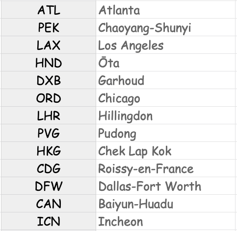

Ruby Monstas
Hashes
Definition

-
A Hash is another type of collection (like
Array) - It consists of keys and values
- It is sometimes referred as a Dictionary
Creating Hashes
To create a Hash, we use curly braces {}
hash = {}
# => {}
Rules
Hashes always have pairs of keys and values
hash = { key: "value", another_key: "another value" }
# => {:key=>"value", :another_key=>"another value"}
- A key can only exist once
- Keys are usually symbols (we learn about it later!)
- Values can exist multiple times
- Pairs are separated by comma ,
By the way...
hash = { key: "value", another_key: "another value" }can also be written like this
hash = { :key => "value", :another_key => "another value" }
It's just a different way to write it,
whereas key: "value" is more common
An example
movie = {
name: "The Matrix",
released: 1999,
imdb_rating: 8.7
}
# => {:name=>"The Matrix", :released=>1999, :imdb_rating=>8.7}
Reading from hashes
We can use the key in [square brackets] to read a value
hash[:key]
# => "value"
Reading from movie
movie[:name]
# => "The Matrix"
movie[:released]
# => 1999
Updating values
We can assign a new value to a key
hash[:key] = "new value"
# => "new value"
Updating a value for movie
movie[:imdb_rating] = 9.3
# => 9.3
movie
# => {:name=>"The Matrix", :released=>1999, :imdb_rating=>9.3}
Adding new key/value pairs
The same way we update values,
we can add new key/value pairs
hash[:new_key] = "yet another new value"
# => "yet another new value"
Adding a key/value pair to movie
movie[:tomatometer] = "88%"
# => "88%"
movie
# => {:name=>"The Matrix", :released=>1999, :imdb_rating=>9.3,
# :tomatometer=>"88%"}
Deleting key/value pairs
We use the method .delete(:key) to delete a pair
hash.delete(:new_key)
# => "yet another new value"
Removing a key/value pair from movie
movie.delete(:tomatometer)
# => "88%"
movie
# => {:name=>"The Matrix", :released=>1999, :imdb_rating=>9.3}
Summary
# creating new hash
movie = { name: "WALL·E", released: 2008, imdb_rating: 4.8 }
# updating values
movie[:imdb_rating] = 8.4
# adding new key/value pairs
movie[:tomatometer] = "88%"
# deleting key/value pairs
movie.delete(:tomatometer)
movie
# => {:name=>"WALL·E", :released=>2008, :imdb_rating=>8.4}
When to use hashes
We mainly use Hashes for two purposes
When there are multiple variables that logically belong to each other
person = {
name: 'Harry',
age: 14,
hair_color: 'Black'
}As a lookup structure, aka dictionary
airports = {
CDG: 'Paris',
JFK: 'New York',
YYZ: 'Toronto'
}Additional methods
There are some useful methods for hashes
.keys.values.key?(:key).has_value?(value)
Additional methods examples
movie = { name: "Fargo", released: 1996, imdb_rating: 8.1 }
movie.keys # => [:name, :released, :imdb_rating]
movie.values # => ["Fargo", 1996, 8.1]
movie.key?(:name) # => true
movie.key?(:director) # => false
movie.has_value?(8.1) # => true
movie.has_value?(2019) # => false
Additional Resources
What questions do you have?